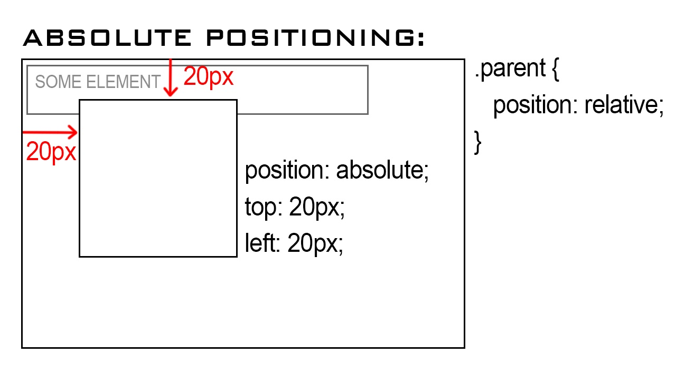
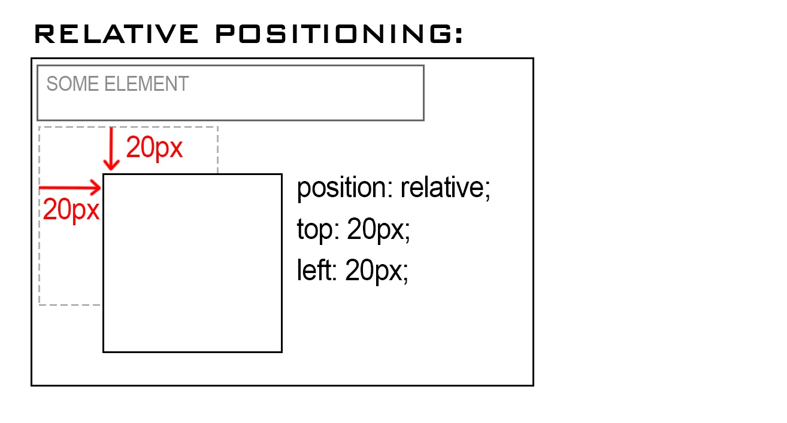

Absolute is relative to the container it sits in within the code (the parent element) - so any co-ordinates you give it; it calculates it's distance based on the parent element.
A use case of this would be creating a div with a particular size, and being able to specify where in that div you’d want the image to sit.
Refer to the image below for an example:
Relative refers to the default position that the element is placed in - in most cases; this uses the next available space on the page or container it sits in. When you move an element with relative positioning, it moves it x amount of pixels based on it’s default location.
When an element is placed on a page with say a nav element above it - if you wanted to give it x amount of pixels from the navbar - you’d use relative positioning and push it out from the top. There are several other ways to do this, say with padding but each have their use cases.
Refer to the image below for an example:
Fixed positioning allows you to place an object on a page, and it remaining ‘fixed’ in place when the page scrolls. A great use case example of this would be that you would fix a nabber to the top of a page, so it remains in place while the page is scrolled.
This way, your navigation links are always only a click away, and in the current viewport.
I haven't included an image for this example, but try it out! You would have most likely seen this in action given that it's the default positioning action for a new element unless specified otherwise.